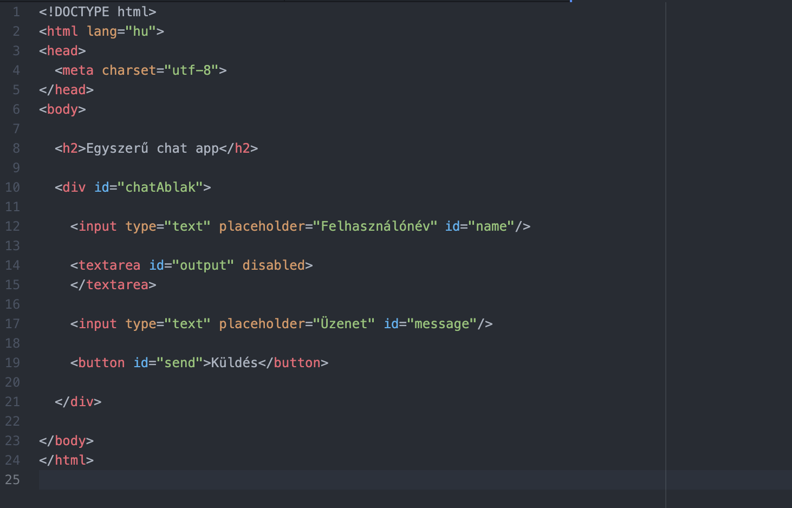
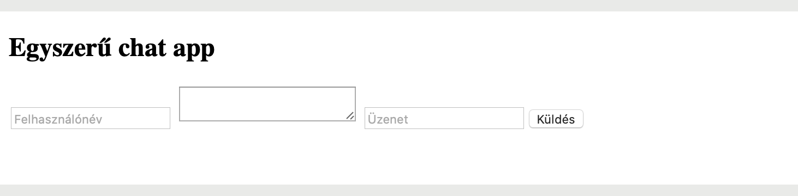
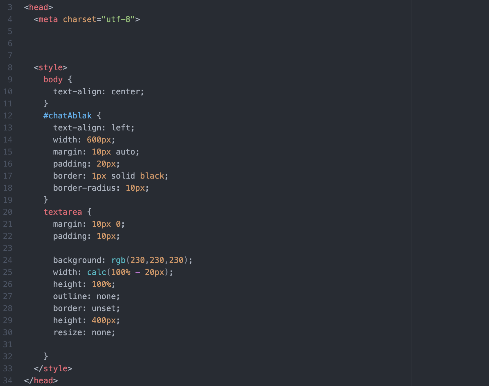
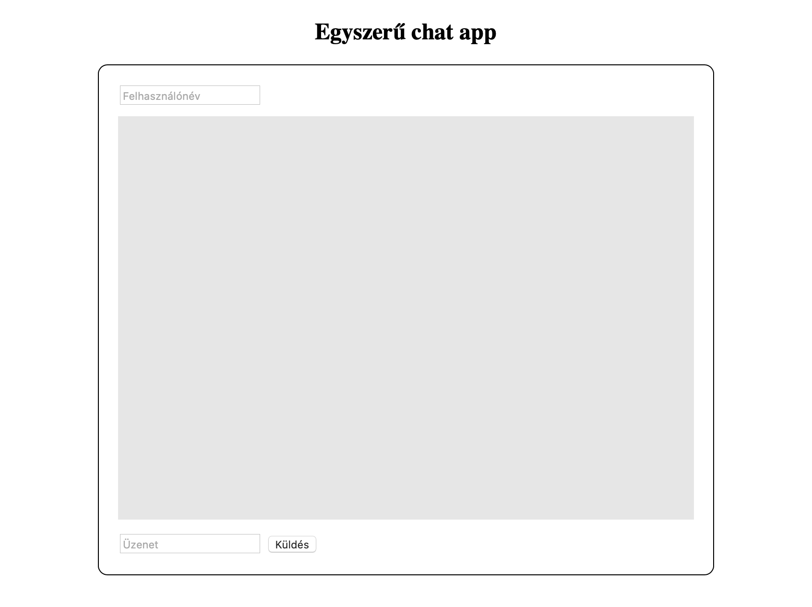

Real-Time Chat készítése NodeJS-el
Ebben a cikkben bemutatom, hogyan lehetséges egy valós idejű chat klienset készíteni HTML és JavaScript (NodeJS) segítségével.
A JavaScript egy scriptnyelv/programozási nyelv, amelyet a böngésző futtat az oldal letöltésekor (kliens oldalon). Interaktívvá lehet tenni vele a felhasználói felületeket: kezelni lehet vele az inputokat, programozni lehet vele eseményeket, továbbá animációkat is állíthatunk be vele.
Felmerül a kérdés viszont, hogy mi az a NodeJS akkor?
A Node.js egy szoftverrendszer amit webszerverek (szerver oldal) készítésére hoztak létre. A programok rajta JavaScript-ben írhatóak, eseményalapúak. Lényegében a JavaScript programozási nyelvvel már nem csak a felhasználók által látott tartalommal bánhatunk, hanem folyamatosan a webszerveren futó JavaScript programot is írhatunk: ennek hála, tudjuk elkészíteni például a chat alkalmazásunkat.
Megjegyzés: A NodeJS szorosan összekapcsolódik az NPM(Node Package Manager)-el, ami segítségével külső, előre megírt segéd program-csomagokat (repository, repo) kezelhetünk a saját programunkon belül.
A fejlesztés a következő lépésekben történik:
A lépéseket végigkövetve LEGO szerűen összeáll majd a működő kis chat alkalmazásunk, és megértjük a program felépítését.
1. A projekt alapjai
Első körön töltsük le a NodeJS-t és telepítsük (vele együtt települ az NPM is):
Ha ezzel megvagyunk, akkor a következő 2 fájlra lesz szükségünk. Hozzuk létre a
- index.html
- server.js
nevű fájlokat.
2. A chat megjelenése
A index.html-el fogjuk kezdeni az utunkat, amellyel elkészítjük a Chat alkalmazásnak a megjelenését amit a felhasználók elérhetnek.
Kezdjük is szép sorjában. Az index.html alapvető sorait már fejből is tudhatjuk:

Mit szeretnénk megjeleníteni? Mi kell egy chat alkalmazáshoz?
Először is, ne feledkezzünk meg a html fájlunk karakter készletét UTF-8-ra állítani a head-ben.
Ezek után, a következő elemekre lesz szükségünk:
- Felhasználó név (text input)
- Üzenetváltás log (textarea)
- Kündendő üzenet (text input)
- Küldés gomb (button)
Hozzuk létre az említett elemeket, és adjunk nekik megfelelő ID-kat. (#name, #output, #message, #send)
Fontos továbbá, hogy az #output textarea elementünket ellássuk a disabled attribútummal, ugyanis nem szeretnénk ha a felhasználó módosítani tudná a chat előzmények tartalmát.
Esztétikai okokból ezeket az elemeket csomagoljuk egy #chatAblak nevű div elementbe, adjunk nekik placeholdereket, és ráadásképp még adhatunk az oldal tetejére címsort is.
Egyenlőre valahogy így néz ki az oldalunk:
Természetesen ez a "csiszolatlan-gyémánt" külső elég gyér hatást kelthet az oldalunkra látogató felhasználóknak.
Kicsit fűszerezzük meg hát a dolgokat, formázzuk ízünk szerint az oldalt a head-ben, CSS segítségével.
A következőket változtattam én:
- A body tartalmát középre igazítottam
- A #chatAblak-ot megfelelő padding-el, margin-nel (hogy középen legyen) és border-el láttam el, továbbá megadtam a maximális szélességét.
- A textarea tartalmát szintúgy padding-el láttam el, és alul-felül margin-nel. Háttérszínt állítottam.
- A textarea-nak 400px magasságot, 100%-os szélességet állítottam (amiből kivontam 20 pixelt, mivel annyival van behúzva a #chatAblak tartalma).
- Utolsóként pedig a textarea méretezhetőségét levettem, illetve bármilyen alap border-t és outline-t leszedtem róla.
Valahogy így:
S immár kész is a megjelenésünk:
